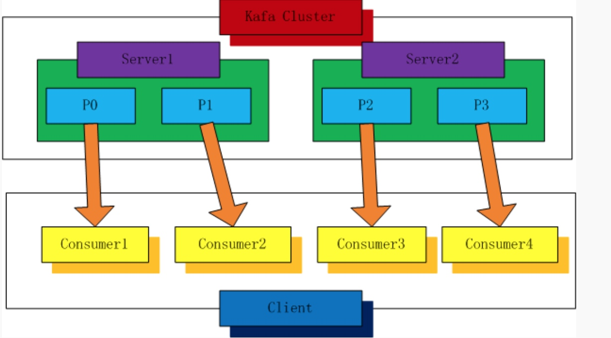
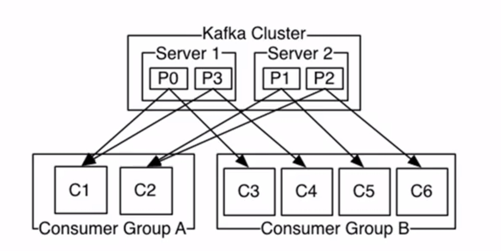
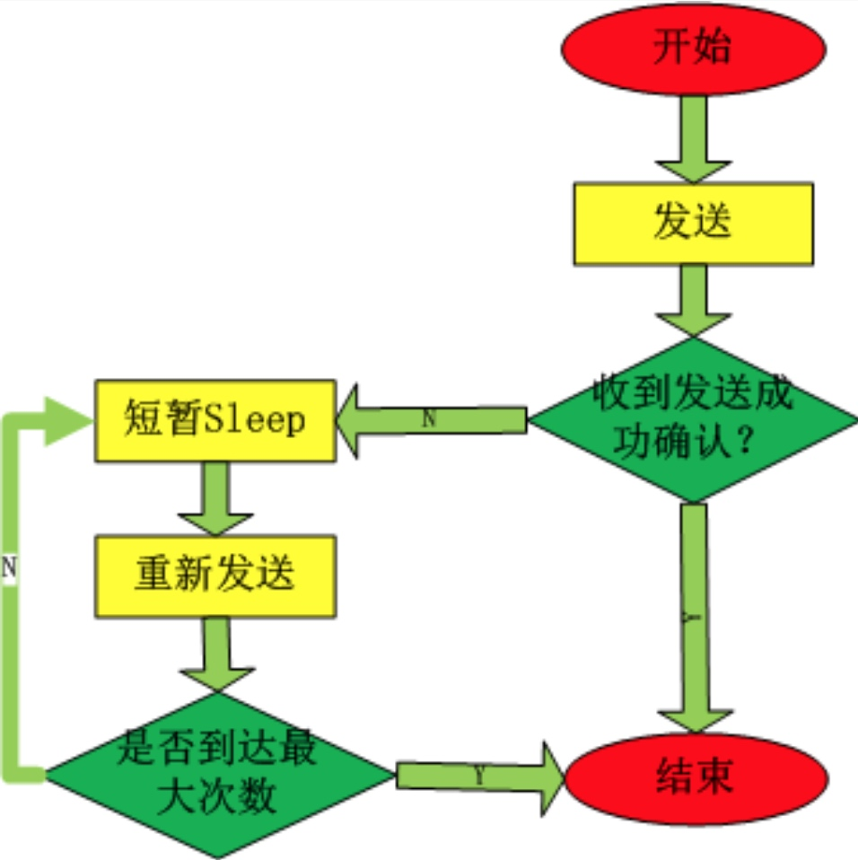
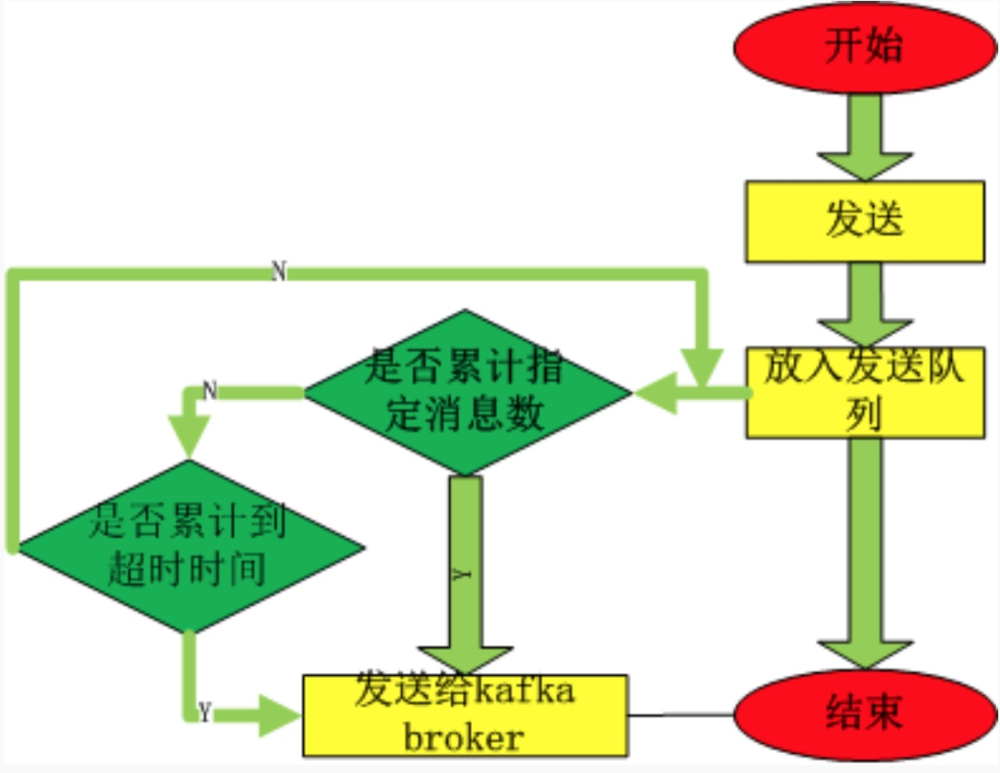
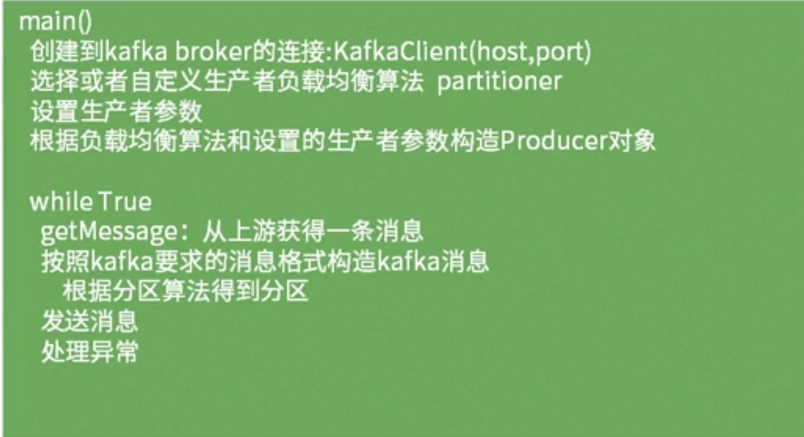

Kafka消费者编程模型
分区消费模型

如图有kafka集群有两台服务器，共有四个分区，在分区消费模型中有四个分区，每个分区就要对应一个消费者实例。一对一的关系是必须建立的
- 分区消费模型的伪代码：
main()
获取分区的size
for index =0 to size
create thread(or process) consumer(Index)
第index个线程(进程)
consumer(index)
创建到kafka broker的连接: KafkaClient(host,port)
指定消费参数构建consumer: SimpleConsumer(topic, partitions)
设置消费offset : consumer.seek(offset,0)
while True
消费指定topic第index个分区的数据
处理
记录当前消息offset(可选)
提交当前offset（可选）
组消费模型

- 两台服务器，四个分区
- 两个消费组 groupA（2个consumer实例） ,groupB（4个consumer实例）
- groupA 和GroupB 将会拿到kafka发送的全量消息
- groupA 中每个消费者实例消费两个kafka集群中得两个partition
groupB 中每个消费者实例消费一个kafka集群中得一个partition
组消费模型伪代码
main()
设置需要创建的流数N # 每个consumer组里有多少个consumer实例，即N值
for index =0 to N
create thread consumer(Index)
第index个线程
consumer(index)
创建到kafka broker的连接: KafkaClient(host,port)
指定消费参数构建consumer: SimpleConsumer(topic, partitions)
设置从头消费还是从最新的消费(smallest或largest)
while True
从指定topic的第index个流取数据
处理
（offset会自动提交到zookeeper,无需我们操作）
- Consumer分配算法
1.For each topic T that Ci subscribes to
2.let PT be all partitions producing topic T
3.let CG be all consumers in the same group as Ci that consume topic T
4.sort PT (so partitions on the same broker are clustered together)
5.sort CG
6.let i be the index position of Ci in CG and let N = size(PT)/size(CG)
7.assign partitions from i*N to (i+1)*N - 1 to consumer Ci
8.remove current entries owned by Ci from the partition owner registry
9.add newly assigned partitions to the partition owner registry
(we may need to re-try this until the original partition owner releases
its ownership)
两种消费模型对比
分区消费模型更加灵活但是：
（1）需要自己处理各种异常情况；
（2）需要自己管理offset(以实现消息传递的其他语义)；
组消费模型更加简单，但是不灵活：
（1）不需要自己处理异常情况，不需要自己管理offset；
（2）只能实现kafka默认的最少一次消息传递语义；
语义：
* 最多一次，有可能出现数据的丢失。
* 最少一次，有可能出现数据的重复，如当producer 发送一条数据给consumer，
consumer发送确认信息，由于网络等原因producer，未收到确认消息，故再次给consumer
发送消息，此时，第一条消息和第二条消息都被consumer重复消费
* 有且仅有一次，即生产者生产一条消息，消费者消费一条消息，一对一关系，消费者不会
重复收到消息也不会丢失消息
* 两种消费模型中kafka默认实现的都是至少一次语义
kafka Consumer Java客户端实现
kafka生产者消费模型
同步生产模型

- 同步生产模型中，客户端开始发送消息，需要等待kafka服务器端的确认，如果收到确认，则该条消息发送成功， 否则进入休眠等待一段时间，将重新发送，发送成功则结束，否则等待超时后继续发送直到发送成功 或者达到最大重试次数
异步生产模型

- 异步生产模型中，当客户端发送消息时将被缓存到客户端（kafka服务器上）的队列上，此时该条消息发送结束。
- 当缓冲队列达到累计数或者到达累计时间，客户端将队列中得所有消息批量一次发送给kafka服务器
两种生产模型的伪代码

两种生产模型对比
同步生产模型:
（1）低消息丢失率；
（2）高消息重复率(由于网络原因，回复确认未收到)；
（3）高延迟
异步生产模型:
（1）低延迟;
（2）高发送性能；
（3）高消息丢失率(无确认机制，发送端队列满)
我们可以根据不同的应用场景选择不同的发送模型。当我们的业务需要高吞吐量，并允许丢失的情况下
选择异步生产模型为好。当我们的的消息不能丢失而对吞吐量没有太高的要求此时选择同步生产模型。
生产者消费者实现
java -cp kafka-test.jar com.zuoye17.kafka.producer.ASyncProduce
java -cp kafka-test.jar com.zuoye17.kafka.consumer.GroupConsumer 3